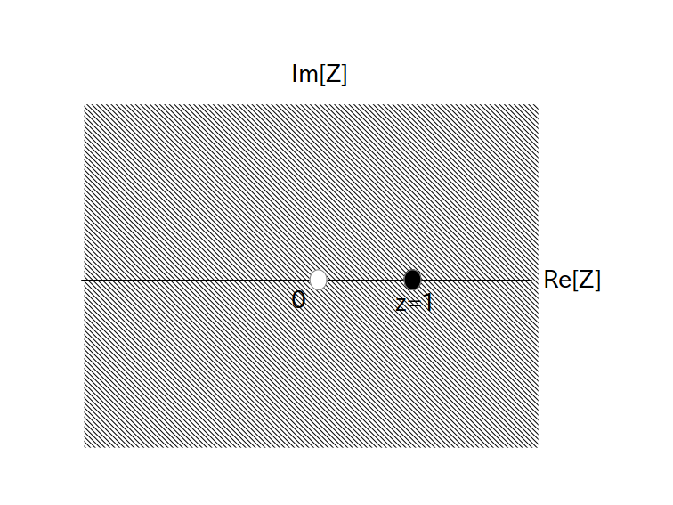

正整数 $\textrm{L}$ が有限の時、$f[0]$から$f[\textrm{L}-1]$まで値が入っていて、残りは全て $f[i]=0, (i=\textrm{L},\textrm{L}+1,\cdots)$ である時間領域ディジタル信号の Z 変換を、前ページで示した手順に従って計算してみましょう。
(手順 1) 変換対象となる時間領域ディジタル信号 $f[i]$ が周期的だったら Z 変換ではなく DFT を行って計算を終了する。
もし非周期的かつ無限の長さの信号だった場合は(手順 2) に進む。
→ 非周期的でかつ無限の長さなので(手順 2)に進みます。
(手順 2) とりあえず $f[i]$ を Z 変換の定義にそのまま代入して $\textrm{F}(z)$ を求める。
→ $i$ が $\textrm{L}$ を超えると $f[i]$ は全て $0$ となるので以下の式になります。
\begin{align} \textrm{F}(z) & = \sum_{i=0}^\infty \{ f[i] \cdot z^{-i} \} \\ & = \sum_{i=0}^{\textrm{L}-1} \{ f[i] \cdot z^{-i} \} \\ & = f[0] + \frac{f[1]}{z} + \frac{f[2]}{z^2} + \cdots + \frac{f[\textrm{L}-1]}{z^{\textrm{L}-1}} \end{align}(手順 3) 無限級数のままだと何かと都合が悪いので場合分けをして収束後の式を求める。
→ 明らかに
(場合 3-1) (手順 2)の段階で既に無限級数で無くなっている場合
が適用されるので、上で求めた $\textrm{F}(z)$ がそのまま収束後の式になります。
そこで引き続き $\textrm{F}(z)$ が発散する $z$ の値を求めますが、おもむろに $z=0$ を代入すると
\begin{align} \textrm{F}(0) = f[0] + \frac{f[1]}{0} + \frac{f[2]}{0} + \cdots + \frac{f[\textrm{L}-1]}{0} \rightarrow \infty \end{align}となるので $\textrm{F}(0)$ は発散します。 しかしそれ以外の $z$ の値なら発散しないので、収束領域は「原点 $z=0$ を除く Z 平面全域」となります。 図で表すと図1の原点 $z=0$ を除く斜め線で表した領域です。
$z=1$ は収束領域に含まれる。 $z=0$ は非収束領域に含まれる。
(手順 4) 具体的な $z$ の値を代入する。$z$ が収束領域に含まれるかどうかで場合分けする。
→ まず試しに $z=1$ を代入してみます。
図1に $z=1$ のZ平面上の位置を示していますが、図を見る限り $z=1$ は
(場合 4-1) $z$ が収束領域に含まれる場合
が適用されますので、$\textrm{F}(z)$ の式にそのまま $z=1$ の値を代入して
\begin{align} \textrm{F}(1) = f[0] + f[1] + f[2] + \cdots + f[\textrm{L}-1] \end{align}が求める答となります。
次に $z=0$ を代入してみますが、$z=0$ は図を見る限り収束領域に含まれません。よって
(場合 4-2) $z$ が収束領域に含まれない場合
が適用されるので、「$z=0$ の時、 $\textrm{F}(0)$ は発散する」が求める答となります。